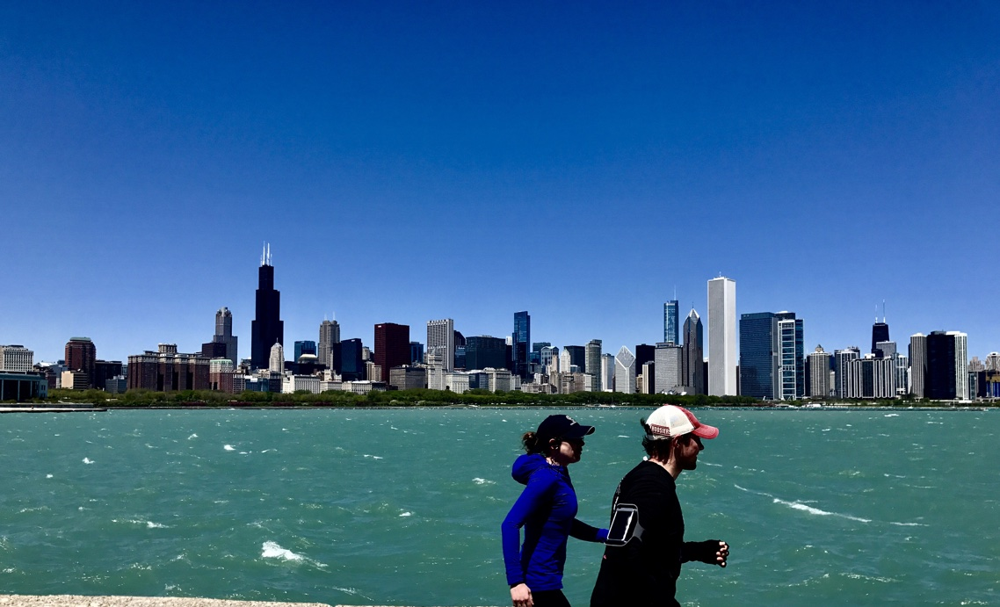

WE RUN ALOT!
About this project home page
Java Projects I've done for Lewis
Hobby for wasting time
About My Running!

My wife and I run close to 20 miles a week
We love running for fun with our dogs and we alsot trainng for races!
We love running in Chicago on the Lake Shore Trail, but here are some of our favorite places to run from
other places we have lived....
Favorite running trails
Lake Shore Trail--Chicago
Schuylkill River Trail--Philadelpia
Greenway Trail-- Minneapolis
Marathons We have run
Colorado
Philadelphia
Indianapolis
Back to the top of page